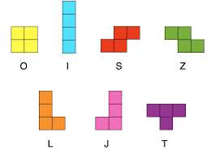

Tetris
Principe
Pour représenter la grille de jeu nous fesons une liste de liste de caracrères.
Il y a 3 caracrères possibles:
- ' ' pour un emplacement vide
- 'P' pour un tetromino déjà placé
- 'C' pour le tetromino courant
Puis on défini un enregistrement qui contient notre grille, des informations sur le prochain, le courant et sur la réserve.
Terominos
Les tetrominos sont associés à des lettres :

Grâce à ça on peux facilement génerer le courant a partir d'une lettre.
Pour tourner les tetrominos on vérifie au cas par cas en fonction du tétromino que le courant forme.
Pour déplacer le courant, on déplace les 'C'.
On rajoute également une procédures pour placer le courant.
Une fonction pour verifier si le courant dois arrêter de descendre.
Une procédure pour supprimer une ligne.
Une fonction pour verifier si le jeu dois s'arrêter.
Et une procédure pour réserver le courant.
Jeu
Pour afficher le jeu on utilise SFML. On commence par
définir des procédures pour dessiner l'etat du plateau.
Le code se présente donc de la manière suivante :
- Tant que le jeu n'est pas fini
-
- Tant que l'interval de temps n'est pas écoulé, on regarde les entrées et on affiche la grille
- Puis on vérifie si le courant touche le sol
- Puis on vérifie si le jeu dois s'arrêter
- Et on affiche la grille
- On calcule le score, le niveau et l'interval de temps pour que le courant descende